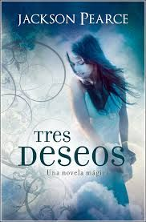
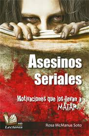
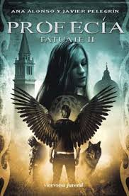
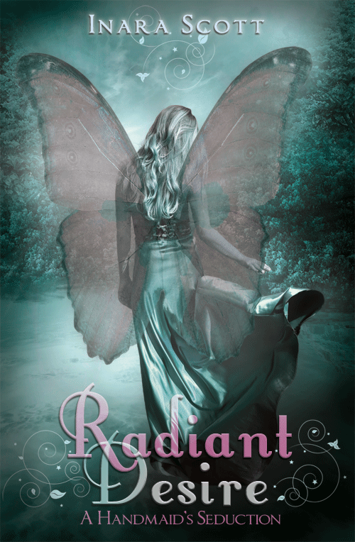
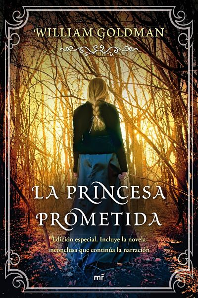
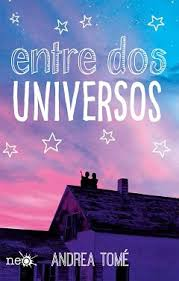
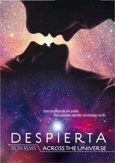

LOS MAS BUSCADOS

Los tres deseos
(Jackson Pearce)
Desde que su novio rompió con ella,
Viola ha pasado los días deseando en silencio
volver a tener a alguien que la quiera y,
lo que es más importante,
volver a ser parte de algo.
Hasta que un día, sin darse cuenta,
llama a un genio de otro mundo, que se quedará
en el suyo hasta que la chica pida tres deseos.

(Asesinos Seriales)
(Rosa Macmus Soto)
En las ultimas decadas el tema de los asesinos seriales,
ha sido motivo de numerosos estudios por parte de los
especialistas y criminólogos de todo el mundo. Este tipo
de delincuentes ha mantenido aterradas a comunidades
enteras, sin que la policía altamente especializada logre
dar con ellos fácilmente. Las víctimas, por lo general
son escogidas al azar y presentan caracteristicas
similares como son: el sexo, la edad y la raza.

La Profecia Tatuaje
(Ana A&J)
Muchas cosas han cambiado desde que Erick murio
en la caverna sagrada. Jana se encuentra en Venecia
y la magia se ha repartido en el mundo entre los
los humanos y los clanes Jana se verá atrapada en una
maraña de engaños y la vida de Álex correrá peligro.
Es entonces cuando la jefa del clan de los Agmar
deberá poner en una balanza su ambición
y su amor por Alex.

Radiant desire
(Ava Dellaira)
Kaia Verde es una de las cuatro sirvientas de Faerie
de Zafira, Reina de los Fey. Para reparar un antiguo
error hecho a Zafira por un rey humano,las siervas
hacen el deporte de los hombres mortales,
seduciéndolas y humillándolas. Cuando Kaia se dispone
a seducir a Garrett Jameson, pero termina siendo el
que se rinde al placer, Zafira está furioso El castigo
de Kaia es simple: hacer que Garrett se enamore de ella
LOS MAS LEIDOS
Mi Dulce Destruccion
(Isabelle Bermer)
Ryder Montgomery había dejado de lado, su faceta de
chico malo corredor de carreras ilegales y mujeriejo
empedernido, hace mucho tiempo. Ahora es un buen
chico .Muy bueno, de hecho. Pero las cosas cambian
cuando se da cuenta de que comienza a tener
sentimientos por una persona muy especial a la que
no le gustaria lastimar. Y lo único que puede hacer
para alejarse ella, es volver a ser quien era antes.

La Princesa Prometida
(William G)
La bella Buttercup jura amor eterno a Westley, que
parte en busca de fortuna y es asesinado por unos
piratas. La doncella obligada, se promete al príncipe
Humperdinck de Florin, un bellaco al cual sólo le
interesa la caza. El mejor esgrimista, hombre más
inteligente y el mas fuerte del mundo son contratados
por los enemigos de Florin para raptar a Buttercup.
En la huida sufran de una incansable persucion.

Entre dos Universos
(Andrea Tome)
Salva y Mía, fans de los Beatles y el cine del terror de
serie b,tienen un hobby poco habitual: alsaltar casas
abandonadas. Se cuelan en edificios en ruinas, se
asoman a las ventanas y se preguntan cómo era la vida
alli. Una noche su juego da un giro inesperado. En el
alfeizar de una de esas casas encuentran una caja. Y
la caja guaarda las cenizas de un muerto. De repente,
un sin fin de preguntas los asaltan, ¿quien era el?

Despierta across
(Beth Revis)
Una nave espacial que es como un pequeño mundo.
Generaciones de tripulantes que viven y mueren en ella,
con la esperanza de que sus hijos lleguen al planeta
prometido. Una carga de personas crionizadas que solo
despertaran al final del viaje. Todo esta perfectamente
ordenado; todo debe seguir un guion escrito de
antemano. Amy una chica de diecisiete años, despierta
en un momento y un lugar que no deberia formar parte.